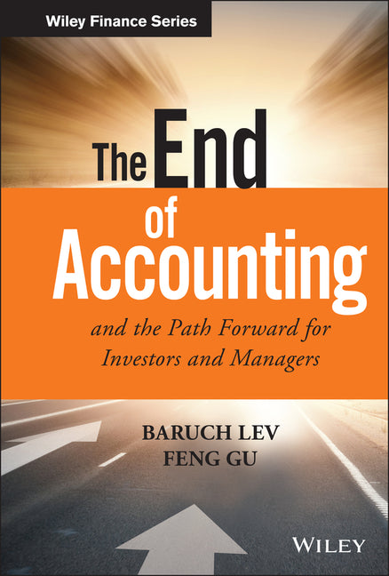

巴鲁克·列夫（Baruch Lev）是纽约大学斯特恩商学院Philip Bardes讲席会计学教授，在无形资产估值和会计信息有用性研究领域享有国际声誉，被认为是全球最具影响力的会计学者之一。冯谷（Feng Gu）是纽约州立大学布法罗分校管理学院会计学教授。两位学者在2016年由Wiley出版了这部《The End of Accounting》，提出了一个在会计学界和投资界引发广泛讨论的核心论断：传统会计体系正在失去对投资者的价值。
列夫和冯谷通过对超过六十年的实证数据分析，揭示了一个令人警醒的趋势：会计报告中的关键产出——营业收入、每股收益、净资产等——与股票价格之间的统计相关性在过去半个多世纪中持续下降。在1950年代，盈利和账面价值能够解释约90%的股价波动；到了2010年代，这一解释力已降至不足50%。作者认为，这种断裂的根本原因在于会计准则未能跟上经济结构的变迁——当企业的核心价值越来越多地来自专利、品牌、数据、算法、客户关系等无形资产时，以历史成本为基础、侧重有形资产计量的传统会计框架便失去了捕捉真实价值的能力。研发支出被计入费用而非资产，品牌价值无法在资产负债表上体现，客户获取成本被立即冲销——这些会计处理方式系统性地扭曲了投资者对企业真实经济状况的认知。
面对这一困境，列夫和冯谷提出了"价值创造报告"（Strategic Resources & Consequences Report）作为替代方案，将企业的战略资源——包括研发管线、客户基础、品牌强度、人力资本等——纳入一个结构化的信息披露框架。这一提议虽然尚未被主流会计准则采纳，但对资本市场参与者具有深刻的启示意义。IBM前首席执行官塞缪尔·帕尔米萨诺（Samuel J. Palmisano）为本书撰写推荐语时指出："Utilizing and valuing intangible assets is essential for companies' investment and capital allocation decisions. This book proposes a thoughtful approach for managers and investors to appraise intangibles and thereby more accurately assess a company's value and performance. It's an important book for business leaders to read."
本书中文版《会计的没落与复兴》于2018年由北京大学出版社出版，方军雄教授翻译。对于中国的投资者和企业管理者而言，本书的价值在于它从根本上挑战了"看财报就能看懂一家公司"这一普遍假设。在A股市场上，科技公司、互联网平台和创新型企业的估值长期困扰着投资者——市盈率看似昂贵、净资产收益率看似不高，但企业价值却持续增长。列夫和冯谷的研究提供了理解这一现象的理论框架：不是市场定价错了，而是传统会计指标已经无法完整刻画这些企业的真实价值。